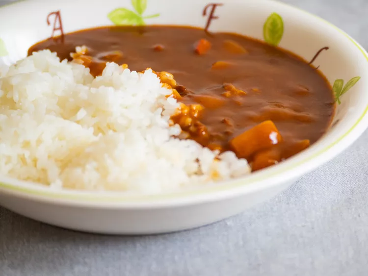

Japanese Curry

Description
A plate of kare raisu or Japanese curry rice has the power to nourish the body and soul on even the coldest of days. While you can make Japanese curry—beloved for its mildly spicy, umami-rich flavor—from scratch, it’s an easy dish to throw together with just three ingredients. All you need is a box of curry roux cubes and your choice of protein and vegetable.
Whenever I make Japanese curry, I’m always surprised at how quickly the dish comes together. The curry roux cubes melt into a pan of sautéed chicken, potatoes, and a couple cups of water in just a few minutes, resulting in a velvety sauce perfect for spooning over rice. Read on to find out how to make it for yourself.
Ingredients
- 1 tablespoon vegetable oil
- 1 pound chicken breasts or thighs, cut into 1-inch cubes(or another protein of your coice)
- 2 medium potatoes, peeled and cubed
- 2 1/2 cups water
- 1 3.2-ounce package of curry cubes
Steps
- Heat oil in a large skillet or Dutch oven over medium-high heat and sauté the protein for about 5 minutes. Add potatoes and/or other vegetables, if using, and sauté for another 3 to 4 minutes.
- Add the water and bring everything to a boil. Then lower the heat and simmer, covered, for about 15 minutes. Add the water and bring everything to a boil. Then lower the heat and simmer, covered, for about 15 minutes.
- Turn the heat to low. Break the curry roux into cubes and add them to the mixture. Stir until the cubes are completely melted. Simmer for another 5 minutes or until the curry is heated through. Serve with rice.
Home